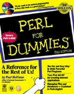

|  | By Paul
Hoffman Second Edition IDG Books, 1998 ISBN: 0-7645-0460-6 408 pages $29.99 |
I wanted to like this book. I really did, and I tried hard. There's a big gap in the Perl literature right now: There's no other book about Perl that's aimed at nonprogrammers. It's very difficult to write such a book, and I was willing to ignore a certain number of technical errors because of this. If the book had good qualities that would make it useful as a tutorial for a complete beginner in spite of minor inaccuracies in the details, I wanted to find that out. But I read it and was appalled.
It would be very easy to spend a lot of time picking at the small technical errors, but I think that would miss the point about what is wrong with this book, so I'm not going to do it. The big problem with Perl 5 for Dummies is that it is not aimed at nonprogrammers. After chapter 4 or 5, it is structured like a reference manual: The chapters are laid out topically, with all the string functions in one chapter and all the number functions in another, instead of being ordered with simple things first and more difficult things later on.
There are hardly any example programs. Chapter 22, which contains ten useful example programs, is a pleasant exception, but it is too little and too late. The examples that are included don't follow a progression from simple things to more complicated ones. Usually, when you are writing a book about programming, even one that is not aimed at Dummies, you like your first example to as simple as possible, something like this:
print "Hello, world\n";
This gives the reader a chance to solve a lot of very difficult preliminary problems: How do they create a program file? How do they run the compiler? Where did the output go? With those problems solved, it is safe to move on to studying the language itself. You don't want to saddle the user with having to learn a new language and a new environment at the same time. But the first example program in Perl 5 for Dummies is 48 lines long. And after the 48 lines of source code, author Paul Hoffman has this to say:
For now, don't worry about what this program does. Trust me, it does something, but that's not the point of this chapter. In fact, you'll see exactly what it does at the beginning of the next chapter.
If he had started with a simple program, he would not have had to apologize for it, and he wouldn't have had to put it off until the next chapter, and the explanation would not have taken up six pages. It seems obvious, doesn't it? The book is for Dummies, so you start with a simple example. But that's not what the author does. I have no explanation for this.
This sort of poor planning and poor organization abounds. A gross example: Hoffman explains the for (EXPR;EXPR;EXPR) construction before he explains the foreach (LIST) construction.
Another example: When Hoffman discusses logical operators, he puts in a garbled explanation of the xor operator. The problem here isn't the garbling; it's the presence of xor, which should be omitted. But the book has referencemanualitis, which means that a section about logical operators has to discuss all the logical operators. In a reference manual that is fine, because a reference manual is supposed to be complete. In a book for dummies with no previous programming experience it is madness. Time and time again Hoffman will say that something is not very useful, and then explain it anyway.
Now please repeat the preceding paragraph several more times, with xor replaced by <=>, continue, redo, the /o regex modifier, the \Z regex metacharacter, the -S, -b, -c, -p, and -t filetests, the reset function, the select function, the caller function, bit operations, and hex and octal numbers. None of these things has any place in a book for Dummies, and in many cases Hoffman says so, turning around immediately after explaining them to say that they should be avoided or are rarely useful.
Another symptom of referencemanualitis is that Hoffman rarely takes advantage of natural opportunities to show examples that reinforce things he's explained earlier. For example, on pages 141–142 he is discussing localtime. His example program looks like this:
($Second, $Minute, $Hour, $DayOfMonth, $Month, $Year,
$WeekDay, $DayofYear, $IsDST) = localtime(time);
$RealMonth = $Month + 1;
print "$RealMonth/$DayofMonth/$Year";
Then he explains the potential for danger:
Also note that the year is the number of years since 1900, not the two-digit year number. Thus, in a few years, the program above will display something like 9/13/101, which looks completely silly.
Here is a squandered opportunity to reinforce the % operator, which he discussed, with an inept example, way back on page 90. He can explain how to fix the problem and show a typical use of % at the same time–but he doesn't. Correcting the month number would have been a good opportunity to use the ++ or += operators, which he discussed at length on page 92, but again the opportunity is missed. The second edition shows an example with % -- and also suggests an incorrect fix that will cause a Y2100 fault.
There is little development of the subject matter or explication of the connections between related items; like a reference manual, it's mostly just an enumeration of features.
Often Hoffman just doesn't seem to have a clear idea of who his audience is. On page 90, he punts on the notion of operator precedence and says that you should use parentheses everywhere. I can understand that. Perl operator precedence is a complicated business. I do not think I would have punted so soon, because by page 90 the only operators that have been introduced are basic arithmetic operators, and the precedence rules for those are the same rules that everyone learns in elementary school; it might have been nice for Hoffman to mention that the precedence is the same in Perl as it was in fourth grade, instead of scaremongering. But Hoffman is the author and I can respect the decision; if he thinks that operator precedence is too scary for the Dummies I am not going to disagree. But then on page 92 he mentions the log function, and without explaining what it is:
log takes the natural log (base e) of its argument
Does this make sense? Did the people who couldn't understand 3+2*4 on page 90 suddenly learn about Napierian logarithms two pages later? Hoffman's either patronizing them on page 90 or confusing them on page 92. Another example: On page 143 is a warning: "The rand function is not meant to be used in strong cryptography..." Hello? Sorry, I must have gotten off at the wrong floor; I thought this was the book for Dummies. If the Dummies are trying to build strong cryptographic systems, rand is going to be the least of their problems.
When there are simple and difficult explanations, you can usually count on Hoffman to find the difficult explanation, and then to tell you how difficult it is. For example: (page 93)
int can be a bit tricky because it rounds down for positive numbers and rounds up for negative numbers.
He's right; that is tricky. Wait, which way does it round again? Up, down, positive, negative, I can't remember. But if he had said:
int is very simple: It throws away the fractional part of a number, leaving the integer part.
then it is a lot easier and you understand the name so that next week you might remember what it does. Another example of this: In the ill-advised explanation of xor, he says
The operator returns true if the two things have different truth values but returns false if they have the same truth value. (See table 8-2.)
Here's the simple version:
$soup xor $salad is true if either $soup or $salad is true, but not both.
Then you dispense with the table.
What went wrong here? It could just be bad writing. Bad writers don't stop to think whether there might be a better way to say something; they just write the first thing that comes into their heads. Part of the problem is the whole 'Dummies' approach, which encourages the writer to write a confusing explanation and then to discount the reader's confusion as coming from the subject matter rather than the inept explanation; a reader who is willing to be insulted and categorized as a 'Dummy' is not going to demand a better explanation. If things are confusing, they will assume it is their own fault instead of putting the blame where it belongs, on the writer.
But I think a large part of the problem is that Hoffman doesn't understand the subject very well. He spends a lot of time scaremongering, by which I mean that he spends a lot of time warning the reader to stay away from dangerous spots in the language, when actually these spots are safe and easily understood. This is usually a sign of ignorance and fear. I mentioned one of these scares before; here is another:
You can do "numberish" things to strings, but the results are almost impossible to predict accurately...Perl tries hard to find numbers in the strings and do the "right thing" with them, but you cannot always guess what that "right thing" is. Don't risk it: Always use math functions and operators just for numbers. (p.93)
Perl looks for a number at the beginning of the string and ignores the string starting from the first character that can't be part of a number, so that "123xyz" behaves just like 123. How hard would it have been to say this? It's not the warning that I object to, or the advice that this feature is best avoided; it's the scaremongering. It's not hard to predict what Perl will do. It's easy. When you write a book, it's your job to educate and enlighten the reader. But passages like this one encourage the reader to remain ignorant and afraid. They say "This is too complicated for you to ever understand, so just give up." When the reader gives up on trying to understand something, it means the writer has failed. When the writer tells the reader to give up, he is manufacturing his own failure.
Here is another scare:
And, here's a place where Perl gets really confusing. If you use the name of a list in scalar context, Perl interprets it as the length of the list. This little bit of shorthand is terribly confusing to even advanced programmers unless they look at it carefully. (p.111)
There are certainly many surprises lurking in Perl's context sensitivity, but in my experience this is not one of them. Beginners take to this idea quite easily, and find it simple and natural, if you use the right example. The right example is:
if (@array > 4) { it has more than 4 elements }
In spite of his warning, Hoffman even uses this construction himself without seeming to notice!
I speculate this this scaremongering is a reflection of Hoffman's own fear and uncertainty around these areas, and that rather than research them and clear them up for himself, he's chosen to duplicate his ignorance in the reader. He calls $a[3] a 'slice' (p.100), and at first I thought that that was a clever linguistic innovation even though it was unconventional. But later I realized that he did not flout the convention on purpose; I don't think Hoffman understands what 'slice' normally means. (On page 154, he abandons this terminology.) All this supports the theory that Hoffman doesn't understand what context is or how it works, and that that's what leads to his various technical errors, bad examples, scaremongering, and other nastiness.
A final major problem, perhaps of the same type: hashes are deferred until chapter 16, and the discussion is too short and (as usual) lacks real examples. Hoffman insists on calling them 'associative arrays', instead of 'hashes', "because it defines better what they are used for, not how they are implemented." That argument makes sense and carries some weight, but on the other side of the scale is the consideration, which apparently hasn't occurred to him, that 'associative array' takes seven times as long to say and to read as 'hash'. When you say 'hash' it suggests that you are talking about something very basic and very important; when you say 'associative array' you are talking about something obscure and abstruse. Hoffman's choice of terminology and placement of hashes in the book implies that hashes are an obscure and unimportant feature of Perl. But hashes are essential to Perl, and they are not hard to explain, even to Dummies. ("Just like arrays, but the index is a string instead of a number.") I can't imagine what went wrong here.
Summary: This is a really rotten book. Very few books are able to attain as many as eight major flaws:
If IDG had fixed any six of these problems in the second edition of the book, if would still be an unusually bad book. None of them are fixed. The second edition has more minor improvements. For example, in the second edition Hoffman actually explains his 48-line example program instead of presenting it without comment. But all the serious problems remain.
As far as I can tell, Perl 5 for Dummies is not good for anything at all. A Dummy who wants to learn Perl will be better off with O'Reilly's Learning Perl. That book is not really suitable, because it is not aimed at nonprogrammers, but Perl 5 for Dummies is even worse in that regard, and at least Learning Perl is clearly written, accurate, and has effective examples. There is still plenty of room in the world for a book about Perl aimed at nonprogrammers, but Perl 5 for Dummies is not it.
Note: Perl 5 for Dummies was published in 1997, and although it's still easy to find in stores, it is out of print. Why did I review an out-of-print book? Because when I called up IDG Books' Public Relations department to get the review copy, that's what they sent me. It seems that their PR department is as incompetent as their editing department.
Nearly all the comments in this review apply to both editions. When page numbers are given, they refer to the first edition.
__END__